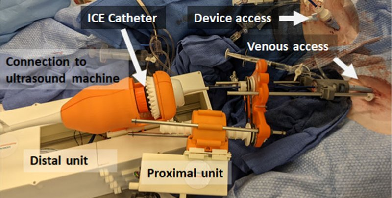

Academic bedside robots · siemens_ice_kim2020
ICE manipulator
Siemens Healthineers robotic ICE catheter manipulator (proximal and distal units)

1 / 4


- Family
- Academic bedside robots (academic)
- Devices
- ACUSON AcuNav Volume ICE catheters (Siemens Healthineers)
- Degrees of freedom
- 4 (two knob angles, bulk rotation, translation)
- Push
- Other drives
- Twist
- Handle or knob
- Tested up to
- Animal
- Sim-to-real
- None found — No simulation-trained controller found for this robot.
Testing
- Highest level
- Animal
- What was tested
- 4 animal experiments (pig, Houston Methodist MITIE) including 2 fluoro-less robot-guided transseptal punctures; beating-heart phantom (Archetype Medical) (kim2022 Sec. 3)
- Key numbers
- view recovery 2.09 +- 0.90 mm and 3.93 +- 2.07 deg in animals, 0.67 +- 0.79 mm and 0.37 +- 0.19 deg in phantom (kim2022 abstract); bench compensation at 60 deg bend 14.8 mm / 31.0 deg -> 5.0 mm / 10.3 deg RMSE (kim2020 arXiv); zero-slack bench, 3 sinusoid trials: tip MAE 4.80 mm / 6.11 deg, 3.31 mm / 3.26 deg with +/-10 deg hysteresis compensation (debuy2022 Table 1)
Mechanism
- Push (translation)
- other: proximal unit at the introducer sheath gives linear and rotational motion of the shaft (mechanism N.R.)
- Twist (rotation)
- distal unit holds the handle, turns both knobs and gives bulk rotation synchronised with the proximal unit
- Device range
- one ICE catheter family
- Target anatomy
- intracardiac echocardiography during EP and structural-heart procedures (incl. transseptal puncture)
Sensing and interface
- Force sensing
- none
- Leader and haptics
- 6-DOF analog joystick, no force feedback
- Imaging
- ICE ultrasound; fluoroscopy-free robot-guided transseptal punctures in animals
- Sterility
- zero-slack version: reusable actuator back portion, disposable front portion that holds the catheter tendons (debuy2022 Introduction, Fig. 1); 2020/2022 manipulator N.R.
Size
- Footprint (mm)
- zero-slack version: 298 mm long, 66 mm diameter (debuy2022 Fig. 1(a) dimension labels); 2020/2022 manipulator N.R.
- Mass (kg)
- N.R.
Simulation
- Simulation model
- none found
- Sim-trained controller
- none found
Versions
- Lineage
- 2020 arXiv (kim2020_towards: 'Back' unit on the handle turns both knobs and gives bulk rotation, 'Front' unit at the introducer gives translation and rotation; 3 pig experiments) / 2022 IJCARS 4-DOF manipulator with automated view recovery (distal and proximal units; 4 pig experiments); 2022 arXiv zero-slack separable ICE robot (debuy2022_design: reusable back portion with four Faulhaber LM 1483-080-11-C linear motors pulling the four tendons directly through 3:1 spools, disposable front portion clipped on with a twist lock and magnetic coupling; 2 bending DOF only, translation/rotation not handled; Materials and Methods, Fig. 1); 2025 arXiv tip-visibility guidance (title)
Sources
- Automated catheter tip repositioning for intra-cardiac echocardiography · International Journal of Computer Assisted Radiology and Surgery, 2022 · doi:10.1007/s11548-022-02631-1 [kim2022_automated]
- Towards Automatic Manipulation of Intra-cardiac Echocardiography Catheter · arXiv, 2020 · doi:10.48550/ARXIV.2009.05859 [kim2020_towards]
- Design and validation of zero-slack separable manipulator for Intracardiac Echocardiography · arXiv, 2022 · doi:10.48550/ARXIV.2204.00645 [debuy2022_design]
Notes
- Notes
- Industrial research prototype, not a product; category academic for that reason. Covers the 'Houston' gap through Houston Methodist. | 2026-11-08 X3: zero-slack paper read in full (it is a 2-page abstract); kim2020 PDF confirms 3 animal experiments in the 2020 version, the row keeps kim2022's 4
This record
- Read level
- full — full (IJCARS 2022; arXiv 2009.05859, PDF ); full (zero-slack, 2-page arXiv 2204.00645, )
- Picture
- kim2022_ice_IJCARS Fig. 1(b) robotic ICE manipulator (distal and proximal units) on the pig ↗ — licence: publisher copyright (Springer, (c) CARS 2022); grade C
- Picture changes
- native extract (1500x961); cropped to panel (b) without its panel caption; label boxes and arrows on the robot left as is; not upscaled
- Found by
- gap: Gap searches for robots the other searches missed.
- Data
- JSON · YAML:
records/robots/siemens_ice_kim2020.yaml - Correction
- Suggest a correction [repository not created yet]